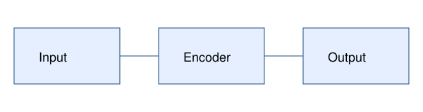

Synthetic Reading Document
Fixture Author · Original generated material, no real research claims
Abstract
This original synthetic article tests a reading document. It retains paragraphs, figures, table cells, and equations.
The numbers below are invented test values. No translation or AI service is used.
1 Introduction
Read in source order. The encoder maps input to output in Figure 1. See Table 1 and [1].
Exact values: 91.25%, 0.001, ID-A_7; frozen backbone; few-shot.
- Preserve the first item.
- Preserve the second item with emphasis.

| Method | Synthetic benchmark | |
|---|---|---|
| Accuracy | Count | |
| Baseline | 89.50 | 200 |
| Proposed | 91.25 | 200 |
(1)
Appendix A: Reproducibility
All words and images were generated for this repository.
References
- [1] Fixture Author. Synthetic reference. 2026. Unrelated ID 2410.09453v3 is not the document identity.